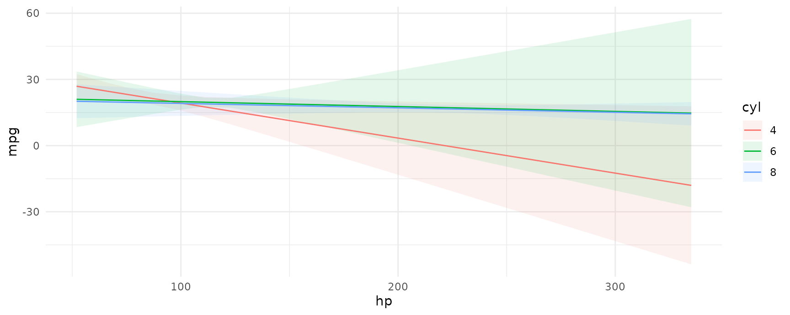
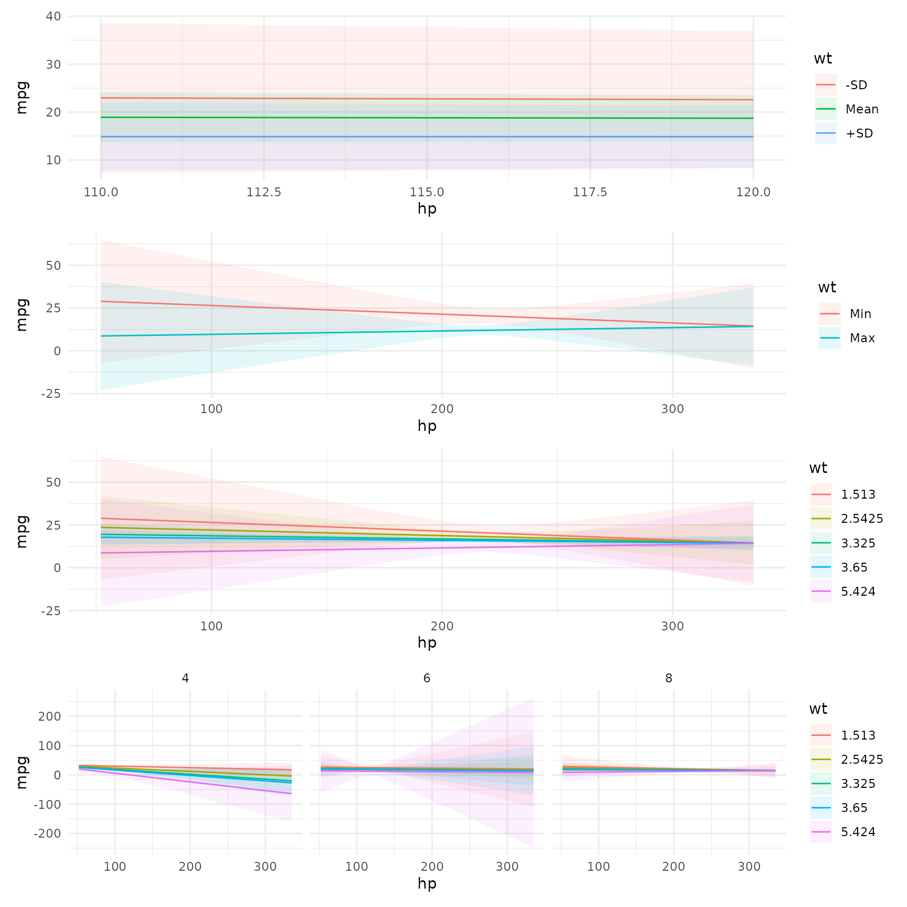
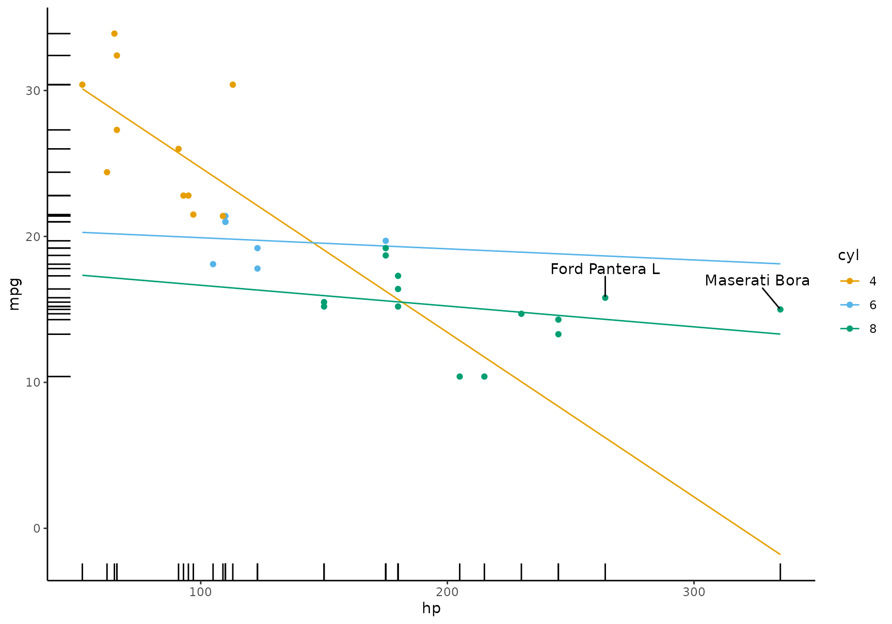
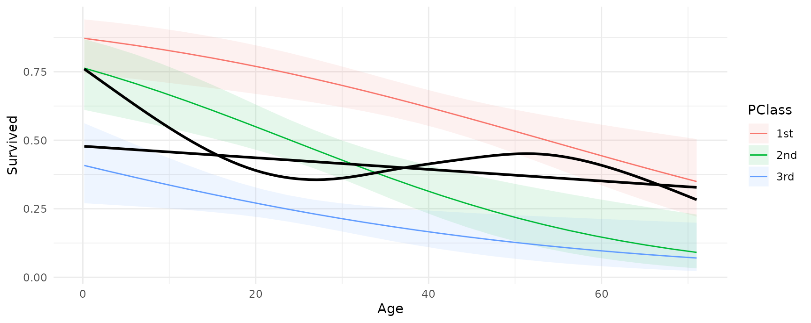

The marginaleffects package includes several flexible functions to plot estimates and to display interactions:
- Plot the raw output of
slopes()orcomparisons() - Interaction / conditional / heterogenous:
-
plot_predictions: Conditional Predictions (equivalent topredictions()) -
plot_comparisons: Conditional Contrasts (equivalent tocomparisons()) -
plot_slopes: Conditional Slopes (aka “Marginal Effects”; equivalent toslopes())
-
The “interaction” or “conditional” plotting functionality is designed to display how the outcome or how the effect of a predictor changes with respect to another variable.
This vignette focuses on plot_predictions(), but the same ideas apply to plot_slopes() and plot_comparisons() as well. In the examples below, we will use the patchwork package to combine plots and the ggplot2 package to customize their content and appearance:
Interactions: Conditional Adjusted Predictions
Consider a linear model with interactions, where the relationship between hp and mpg is conditional on the values of wt and cyl:
mod <- lm(mpg ~ hp * wt * factor(cyl), data = mtcars)
plot_predictions(mod, condition = "hp")
We can show the predicted values of mpg for different values of different predictors:
plot_predictions(mod, condition = c("hp", "cyl"))
We can include a 3rd conditioning variable, specify what values we want to consider, and use one of several string shortcuts for common reference values (“threenum”, “minmax”, “quartile”, etc.):
plot_predictions(mod, condition = list(hp = 110:120, "wt" = "threenum")) /
plot_predictions(mod, condition = list("hp", "wt" = "minmax")) /
plot_predictions(mod, condition = list("hp", "wt" = fivenum)) /
plot_predictions(mod, condition = c("hp", "wt", "cyl"))
Customizing plots
A very useful feature of the plotting functions in this package is that they produce normal ggplot2 objects. So we can customize them to our heart’s content, using ggplot2 itself, or one of the many packages designed to augment its functionalities:
library(ggokabeito)
library(ggrepel)
mt <- mtcars
mt$label <- row.names(mt)
mod <- lm(mpg ~ hp * factor(cyl), data = mt)
plot_predictions(mod, condition = c("hp", "cyl"), vcov = FALSE) +
geom_point(aes(x = hp, y = mpg, color = factor(cyl)), data = mt) +
geom_rug(aes(x = hp, y = mpg), data = mt) +
geom_text_repel(aes(x = hp, y = mpg, label = label),
data = subset(mt, hp > 250),
nudge_y = 2) +
theme_classic() +
scale_color_okabe_ito()
All the plotting functions work with all the model supported by the marginaleffects package, so we can plot the output of a logistic regression model. This plot shows the probability of survival aboard the Titanic, for different ages and different ticket classes:
library(ggdist)
dat <- "https://vincentarelbundock.github.io/Rdatasets/csv/Stat2Data/Titanic.csv"
dat <- read.csv(dat)
mod <- glm(Survived ~ Age * PClass, data = dat, family = binomial)
plot_predictions(mod, condition = c("Age", "PClass")) +
geom_dots(
alpha = .8,
scale = .3,
pch = 18,
data = dat, aes(
x = Age,
y = Survived,
side = ifelse(Survived == 1, "bottom", "top")))
Thanks to Andrew Heiss who inspired this plot.
Fits and smooths
We can compare the model predictors with fits and smoothers using the geom_smooth() function from the ggplot2 package:
dat <- "https://vincentarelbundock.github.io/Rdatasets/csv/Stat2Data/Titanic.csv"
dat <- read.csv(dat)
mod <- glm(Survived ~ Age * PClass, data = dat, family = binomial)
plot_predictions(mod, condition = c("Age", "PClass")) +
geom_smooth(data = dat, aes(Age, Survived), method = "lm", se = FALSE, color = "black") +
geom_smooth(data = dat, aes(Age, Survived), se = FALSE, color = "black")
Extreme customization
Designing effective data visualizations requires a lot of customization to the specific context and data. The plotting functions in marginaleffects offer a powerful way to iterate quickly between plots and models, but they obviously cannot support all the features that users may want. Thankfully, it is very easy to use the slopes functions to generate datasets that can then be used in ggplot2 or any other data visualization tool. Just use the draw argument:
p <- plot_predictions(mod, condition = c("Age", "PClass"), draw = FALSE)
head(p)
#> rowid type estimate std.error statistic p.value conf.low
#> 1 1 response 0.8717909 0.04858089 17.945140 5.237868e-72 0.7436448
#> 2 2 response 0.7632110 0.06638393 11.496924 1.367008e-30 0.6107369
#> 3 3 response 0.4079623 0.07663813 5.323228 1.019416e-07 0.2700636
#> 4 4 response 0.8594973 0.04914581 17.488719 1.746399e-68 0.7337014
#> 5 5 response 0.7360650 0.06490403 11.340821 8.236762e-30 0.5916568
#> 6 6 response 0.3859279 0.06737162 5.728346 1.014148e-08 0.2647067
#> conf.high Survived Age PClass
#> 1 0.9409650 0 0.17000 1st
#> 2 0.8687919 0 0.17000 2nd
#> 3 0.5620556 0 0.17000 3rd
#> 4 0.9314231 0 3.12125 1st
#> 5 0.8429591 0 3.12125 2nd
#> 6 0.5231643 0 3.12125 3rd